(Lady) GAGAN generates objects that respect a given geometric prior—for instance, human or cat faces with arbitrary morphology and shape. The samples below were generated by the method.
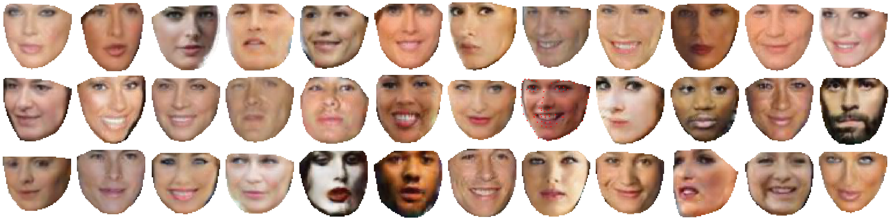
Abstract
Deep generative models learned through adversarial training have become increasingly popular for their ability to generate naturalistic image textures. However, aside from their texture, the visual appearance of objects is significantly influenced by their shape geometry—information that is not taken into account by existing generative models. This paper introduces Geometry-Aware Generative Adversarial Networks (GAGAN) for incorporating geometric information into the image generation process. Specifically, in GAGAN, the generator samples latent variables from the probability space of a statistical shape model. By mapping the output of the generator to a canonical coordinate frame through a differentiable geometric transformation, we enforce the geometry of the objects and add an implicit connection from the prior to the generated object.
Experimental results on face generation indicate that GAGAN can generate realistic images of faces with arbitrary facial attributes such as facial expression, pose, and morphology, with better quality than contemporary GAN-based methods. The method can augment an existing GAN architecture and improve the quality of the generated images.
BibTeX
@inproceedings{kossaifi2018gagan,
author = {J. Kossaifi and L. Tran and Y. Panagakis and M. Pantic},
booktitle = {IEEE Conference on Computer Vision and Pattern Recognition (CVPR)},
title = {GAGAN: Geometry-Aware Generative Adversarial Networks},
year = {2018},
}
Show me your poker face
By changing the shape parameters, GAGAN generates a face that follows the specified shape. Notice how Alejandro (row 1) starts smiling as we vary the corresponding shape parameter. More complex movements can be obtained by varying more than one shape parameter, as shown with Donatella in the final row.
Conversely, by fixing the shape and changing only the non-geometric prior, GAGAN can generate varied appearances while keeping a straight—and geometrically fixed—face.
| Varying only the shape parameters | Varying only the non-geometric parameters |
|---|---|
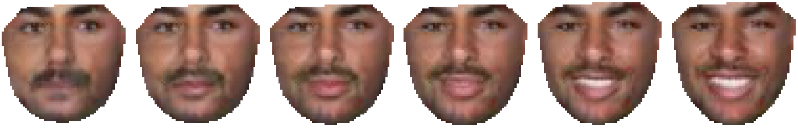 |
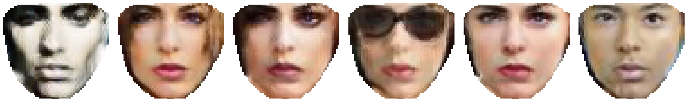 |
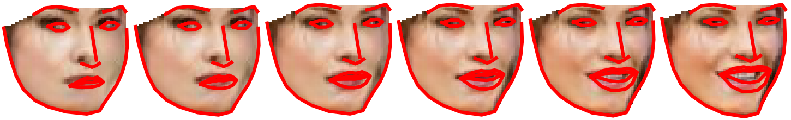 |
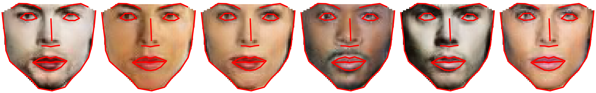 |
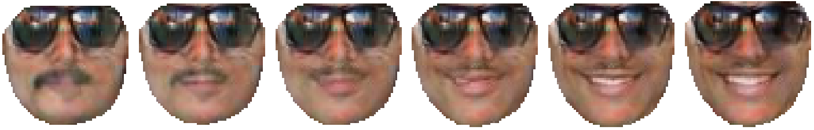 |
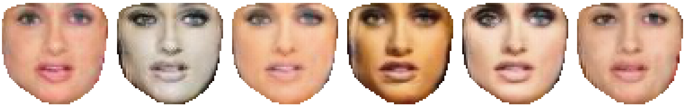 |
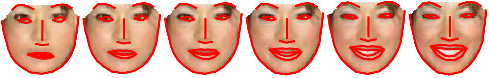 |
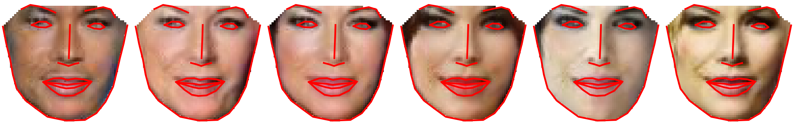 |
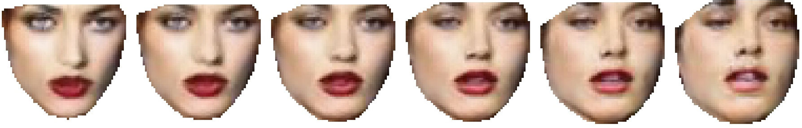 |
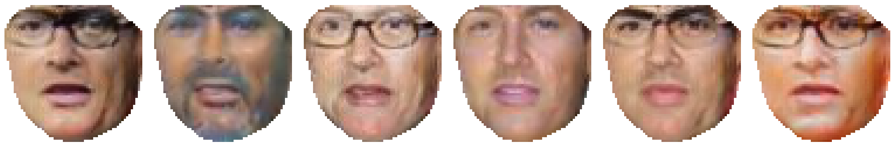 |
Bore me with the details
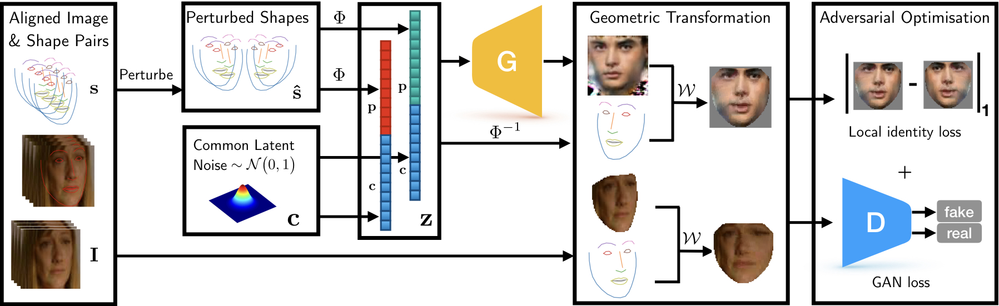
(i) For each training image \(\mathbf{i}\), we use the corresponding shape \(\mathbf{s}\). Using the object geometry learned by the statistical shape model, we create perturbations \(\mathbf{\hat{s}}_1, \ldots, \mathbf{\hat{s}}_n\) of that shape.
(ii) The perturbed shapes are projected onto a normally distributed latent subspace using the normalized statistical shape model. The projection \(\phi\left(\mathbf{s}\right)\) is concatenated with a latent component \(\mathbf{c}\), shared by all perturbed versions of the same shape.
(iii) The resulting vectors \(\mathbf{\hat z}_1, \ldots, \mathbf{\hat z}_n\) are passed to the generator, which produces fake images \(\mathbf{\hat i}_1, \ldots, \mathbf{\hat i}_n\). The geometry imposed by the shape prior is enforced by a geometric transformation \(\mathcal{w}\) (a piecewise affine warp) that maps each generated image onto the canonical shape. The discriminator classifies these shape-normalized images as fake or real. The final objective combines the GAN loss with an \(\ell_1\) loss, encouraging images generated from perturbations of the same shape to remain visually similar in the canonical coordinate frame.
The shape model
The shape model efficiently represents facial structure. I used it extensively in my work on Active Appearance Models for landmark localization. The general idea is to represent facial shape as a linear model by applying PCA to a set of aligned facial shapes.
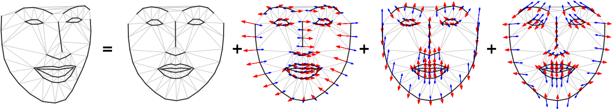
The components of the model can be interpreted as modeling pose (components 1 and 2), smile or expression (component 3), and other geometric variations.
Enforcing the geometry: piecewise affine warping
Also known as a motion model in the AAM literature, piecewise affine warping maps pixels from any shape onto a canonical shape. Its main advantage is that objects—for instance, faces—with different poses and shapes can be compared once mapped onto the canonical frame. This also provides an implicit check that the face is correctly aligned with its corresponding landmarks.
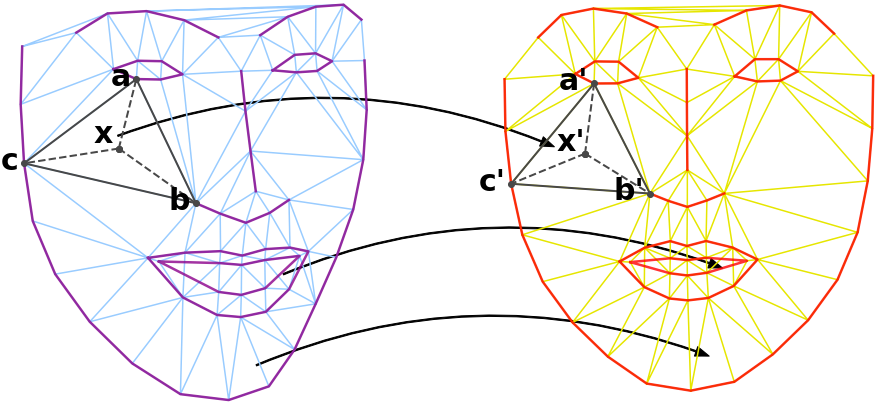
The warp is computed by first triangulating both shapes, typically with a Delaunay triangulation. Points inside each simplex of the source shape are then mapped to the corresponding triangle in the target shape using barycentric coordinates, with pixel values determined through nearest-neighbor or interpolated sampling.